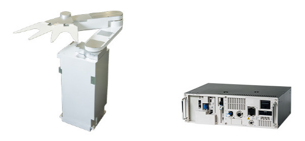

web
에스투글로벌(주)
우대사항
- 전기/전자공학,반도체공학,기계공학 등 전공자 및 경력자
- 운전 가능자
- 외국어 가능자

근무조건
- 근무형태 : 정규직(수습기간)-3개월22
- 근무부서 : 경영지원팀
- 근무요일 : 주 5일(월~금)
- 근무지역 : 경기-오산시
- 급여
ㆍ회사내규에 따름
ㆍ인센티브, 퇴직금 등 별도
- 회사주소 : (447-230) 경기 오산시 외삼미동 170-4 1층 에스투글로벌㈜
- 인근전철 : 서울 1호선 서동탄